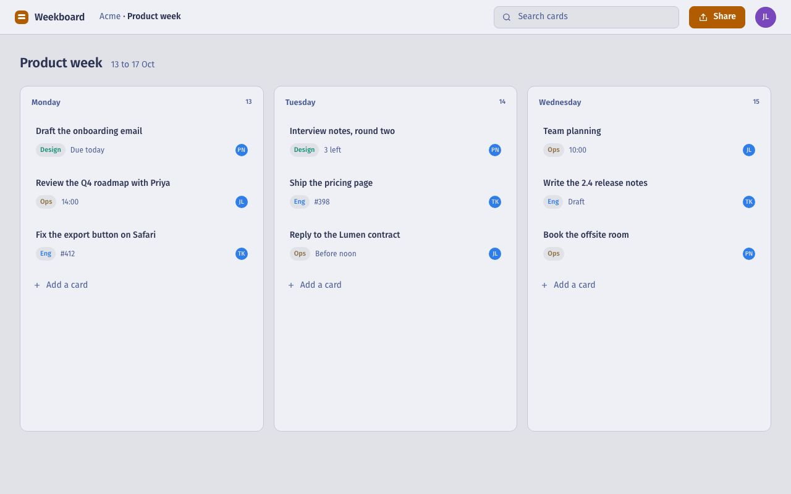

<!--
  Participant chrome (D2 round five and six). Spec: docs/discovery/participant-chrome-research.md and participant-overlay-research.md.
  Theme rule: the chrome is the INVERSE of the host page (dark pill and sheets on a light site, light on a dark site), opaque,
  with a hairline and a soft shadow, the host's font, and the ONE accent the author sets (Weekboard: mint). It never shares a
  panel colour with the host page and never carries ui-tests branding. The site's own product surfaces (attempt view, report
  rows, dashboard) use the site's dark tokens; only the demo app under test is light.
  The bar is one 40px pill, bottom right by default, draggable, hidden while a host input has focus: recording state as its
  leading segment (dot, time, pause; no microphone during the task), the task summary, Done, and "I couldn't do this" as text.
  Under 600px it docks across the bottom and the task summary folds behind its chevron. Stepped sheets keep one height.
-->
<style>
*, *::before, *::after { box-sizing: border-box; }
button { font: inherit; color: inherit; background: none; border: 0; padding: 0; cursor: pointer; text-align: left; }
img { display: block; max-width: 100%; }
:root {
  color-scheme: dark;
  --canvas: #1a1b26; --surface: #1f2335; --raised: #24283b; --line: #292e42;
  --ink: #c0caf5; --muted: #a9b1d6; --comment: #8089b3;
  --moment: #ff9e64; --blue: #7aa2f7; --green: #9ece6a; --teal: #73daca; --purple: #bb9af7; --cyan: #89ddff; --red: #f7768e; --yellow: #e0af68;
  --chip-ink: #1a1b26; --focus: #c0caf5;
  /* the host page under test (Weekboard, light) and the chrome's inverse surface derived from it */
  --host-bg: #e1e2e7; --host-panel: #eef0f5; --host-line: #c4c8da; --host-ink: #2c3353; --host-dim: #4b5a94;
  --ch-surface: #2c3353; --ch-ink: #e1e2e7; --ch-dim: rgba(225,226,231,.68); --ch-hair: rgba(225,226,231,.16); --ch-accent: #5fe3c0; --ch-accent-ink: #14251f; --ch-rec: #f52a65; --ch-radius: 10px;
  --sans: "Fira Sans", system-ui, sans-serif; --mono: "Fira Code", ui-monospace, Menlo, monospace;
}
/* The chrome, drawn at real size with the inverse surface */
.ch { font-family: var(--sans); color: var(--ch-ink); }
.sheet { position: absolute; left: 50%; top: 50%; transform: translate(-50%, -50%); width: min(420px, 88%); max-height: calc(100% - 56px); overflow: hidden; background: var(--ch-surface); border-radius: calc(var(--ch-radius) + 4px); box-shadow: 0 0 0 1px var(--ch-hair), 0 18px 40px rgba(21,26,33,.35); padding: 16px 20px 16px; display: grid; gap: 9px; align-content: start; }
.sheet .step { font-size: 11px; color: var(--ch-dim); letter-spacing: .02em; }
.sheet h4 { font: 500 15px/1.35 var(--sans); text-wrap: balance; }
.sheet p { font-size: 14px; line-height: 1.45; }
.sheet p b { font-weight: 500; }
.sheet .small { font-size: 12px; color: var(--ch-dim); line-height: 1.4; }
.sheet ul.list { display: grid; gap: 4px; font-size: 13px; }
.sheet ul.list li { display: grid; grid-template-columns: 18px 1fr auto; gap: 10px; align-items: baseline; }
.sheet ul.list li i { width: 8px; height: 8px; border-radius: 50%; background: var(--ch-accent); display: inline-block; justify-self: center; }
.sheet ul.list li i.off { background: none; box-shadow: inset 0 0 0 1px var(--ch-dim); }
.sheet ul.list li em { font-style: normal; font-size: 12px; color: var(--ch-dim); }
.sheet .actions { display: flex; gap: 10px; align-items: center; justify-content: space-between; margin-top: 2px; }
.btn { height: 36px; padding: 0 14px; border-radius: var(--ch-radius); font: 500 13px/1 var(--sans); display: inline-flex; align-items: center; gap: 8px; white-space: nowrap; }
.btn.pri { background: var(--ch-accent); color: var(--ch-accent-ink); }
.btn.ghost { box-shadow: inset 0 0 0 1px var(--ch-hair); color: var(--ch-ink); }
.btn.quiet { color: var(--ch-dim); padding: 0 6px; }
.opts { display: grid; gap: 4px; }
.opts li { display: flex; gap: 10px; align-items: center; padding: 7px 11px; border-radius: var(--ch-radius); box-shadow: inset 0 0 0 1px var(--ch-hair); font-size: 13px; }
.opts li i { width: 14px; height: 14px; border-radius: 50%; box-shadow: inset 0 0 0 1px var(--ch-dim); flex: none; }
.opts li.on i { box-shadow: inset 0 0 0 4px var(--ch-accent); }
.opts li.sq i { border-radius: 3px; }
.opts.two { grid-template-columns: 1fr 1fr; }
.scale { display: grid; grid-template-columns: repeat(7, 1fr); gap: 4px; }
.scale li { height: 40px; display: grid; place-items: center; border-radius: 6px; box-shadow: inset 0 0 0 1px var(--ch-hair); font: 500 15px/1 var(--mono); }
.scale li.on { background: var(--ch-accent); color: var(--ch-accent-ink); }
.anchors { display: flex; justify-content: space-between; font-size: 12px; color: var(--ch-dim); margin-top: -4px; }
.box { border-radius: var(--ch-radius); box-shadow: inset 0 0 0 1px var(--ch-hair); padding: 10px 12px; min-height: 56px; font-size: 13px; color: var(--ch-dim); }
.talk { display: inline-flex; gap: 8px; align-items: center; font-size: 13px; color: var(--ch-ink); }
.talk i { width: 16px; height: 16px; border-radius: 50%; box-shadow: inset 0 0 0 1.5px var(--ch-ink); display: inline-grid; place-items: center; }
.talk i::after { content: ""; width: 5px; height: 8px; border-radius: 3px; background: var(--ch-ink); }

/* The bar: one small pill, bottom right, the recording state as its leading segment */
.bar-wrap { position: absolute; right: 16px; bottom: 16px; display: flex; }
.pill { height: 40px; display: flex; align-items: center; gap: 0; padding: 0 6px 0 12px; background: var(--ch-surface); color: var(--ch-ink); border-radius: 20px; box-shadow: 0 0 0 1px var(--ch-hair), 0 8px 24px rgba(21,26,33,.28); white-space: nowrap; font-size: 13px; }
.pill .seg { display: flex; align-items: center; gap: 8px; height: 40px; }
.pill .seg + .seg { border-left: 1px solid var(--ch-hair); margin-left: 12px; padding-left: 12px; }
.pill .rec { font: 500 12px/1 var(--mono); color: var(--ch-dim); }
.pill .rec .dot { width: 7px; height: 7px; border-radius: 50%; background: var(--ch-rec); box-shadow: 0 0 0 3px rgba(245,42,101,.18); }
.pill .rec .pause { width: 22px; height: 22px; border-radius: 50%; display: grid; place-items: center; color: var(--ch-dim); }
.pill .rec .pause:hover { background: var(--ch-hair); color: var(--ch-ink); }
.pill .rec .pause svg { width: 10px; height: 10px; }
.pill .task { display: block; max-width: 190px; overflow: hidden; text-overflow: ellipsis; white-space: nowrap; color: var(--ch-ink); line-height: 40px; }
.pill .task b { font-weight: 500; color: var(--ch-dim); margin-right: 8px; font-size: 12px; }
.pill .task::after { content: " ›"; color: var(--ch-dim); }
.pill .done { height: 28px; padding: 0 12px; border-radius: 14px; background: var(--ch-accent); color: var(--ch-accent-ink); font: 500 13px/1 var(--sans); }
.pill .cant { height: 28px; padding: 0 8px; border-radius: 14px; color: var(--ch-dim); font: 400 13px/1 var(--sans); }
.pill .cant:hover { color: var(--ch-ink); background: var(--ch-hair); }
.pill .grip { width: 8px; height: 16px; margin-right: 10px; background: radial-gradient(circle, var(--ch-dim) 1px, transparent 1.3px) 0 0/4px 4px; opacity: .6; }
.pill .task:hover { text-decoration: underline; text-decoration-color: var(--ch-hair); text-underline-offset: 3px; }

.sheet .step { font-size: 11px; color: var(--ch-dim); letter-spacing: .02em; }
.sheet .step { color: var(--ch-accent); opacity: .9; }
.opts li.on { box-shadow: inset 0 0 0 1px var(--ch-accent); }
.frame.auto { aspect-ratio: auto; padding: 62px 24px 36px; }
.frame.auto .sheet { position: relative; left: auto; top: auto; z-index: 1; transform: none; margin: 0 auto; max-height: none; }
.frame.auto.multi { display: grid; justify-items: center; align-items: center; }
.frame.auto.multi .car-step { grid-area: 1 / 1; margin: 0; }
.frame.auto.multi .car-step[hidden] { display: grid !important; visibility: hidden; }
.frame { position: relative; aspect-ratio: 16 / 10; width: 100%; max-width: 800px; border-radius: 8px; overflow: hidden; background: var(--host-bg); border: 1px solid var(--line); }
.frame .shot { position: absolute; inset: 0; width: 100%; height: 100%; object-fit: cover; object-position: top left; }
.frame .dim { position: absolute; inset: 0; background: rgba(44,51,83,.4); }
.frame .blank { position: absolute; inset: 0; background: var(--host-bg); }
.frame .addr { position: absolute; top: 0; left: 0; right: 0; height: 26px; background: var(--host-panel); border-bottom: 1px solid var(--host-line); display: flex; align-items: center; gap: 8px; padding: 0 10px; font: 400 11px/1 var(--mono); color: var(--host-dim); }
.frame .addr i { width: 8px; height: 8px; border-radius: 50%; background: var(--host-line); display: inline-block; }
.frame .addr span { margin-left: 6px; }
.frame .label { position: absolute; right: 10px; top: 34px; font: 500 10px/1 var(--mono); letter-spacing: .08em; text-transform: uppercase; color: var(--host-dim); background: var(--host-panel); border: 1px solid var(--host-line); border-radius: 3px; padding: 4px 6px; }


.frame.auto { aspect-ratio: auto; padding: 62px 24px 36px; }
.frame.auto .sheet { position: relative; left: auto; top: auto; z-index: 1; transform: none; margin: 0 auto; max-height: none; }
.cmds-note { margin-bottom: 48px; }
.whole-top { margin-top: 0; }
.pair .intro { margin-bottom: 20px; }
.pair .side { margin-bottom: 16px; }
.after { margin-top: 56px; padding-top: 24px; }
@media (max-width: 900px) {
  .whole-top .code li, .pair .excerpt li { white-space: pre-wrap; overflow-wrap: anywhere; align-items: start; }
  .whole-top .code li .src, .pair .excerpt li .src { padding-left: 4px; text-indent: 0; }
  .frame.auto { padding: 50px 12px 24px; }
}

.cmds-note { margin-bottom: 24px; }
.whole-top { margin: 0 0 40px; }

.stepper { display: flex; align-items: center; gap: 10px; margin-top: 10px; font: 400 13px/1 var(--mono); color: var(--muted); }
.stepper button { width: 28px; height: 28px; border-radius: 6px; border: 1px solid var(--line); display: grid; place-items: center; font: 500 16px/1 var(--sans); color: var(--ink); }
.stepper button:disabled { opacity: .35; cursor: default; }
.stepper .where b { color: var(--moment); font-weight: 500; }
.stepper .dots { display: inline-flex; gap: 5px; margin-left: 6px; }
.stepper .dots i { width: 6px; height: 6px; border-radius: 50%; background: var(--line); }
.stepper .dots i.on { background: var(--moment); }

/* Stepped frames keep one height: every step shares the same cell; hidden steps stay in the layout, invisible */
.frame.auto.multi { display: grid; justify-items: center; align-items: center; }
.frame.auto.multi .car-step { grid-area: 1 / 1; margin: 0; }
.frame.auto.multi .car-step[hidden] { display: grid !important; visibility: hidden; }

/* Narrow frames and phones: the pill docks across the bottom; the task summary folds behind its chevron */
@media (max-width: 600px) {
  .bar-wrap { left: 8px; right: 8px; bottom: 8px; }
  .pill { width: 100%; justify-content: space-between; padding: 0 6px 0 10px; }
  .pill .task { max-width: 24px; overflow: hidden; color: transparent; }
  .pill .task::after { color: var(--ch-dim); margin-left: -24px; }
  .pill .seg + .seg { margin-left: 8px; padding-left: 8px; }
}
/* Narrow frames and phones: the pill docks across the bottom; the task summary folds behind its chevron */
@media (max-width: 600px) {
  .bar-wrap { left: 8px; right: 8px; bottom: 8px; }
  .pill { width: 100%; justify-content: space-between; padding: 0 6px 0 10px; }
  .pill .task { max-width: 24px; overflow: hidden; color: transparent; }
  .pill .task::after { color: var(--ch-dim); margin-left: -24px; }
  .pill .seg + .seg { margin-left: 8px; padding-left: 8px; }
}

.frame.auto.multi { display: grid; justify-items: center; align-items: center; }
.frame.auto.multi .car-step { grid-area: 1 / 1; margin: 0; }
.frame.auto.multi .car-step[hidden] { display: grid !important; visibility: hidden; }
body { background: var(--canvas); color: var(--ink); font: 400 15px/1.55 var(--sans); margin: 0; padding: 32px; display: grid; gap: 40px; }
h2 { font: 500 16px/1.3 var(--sans); margin: 0 0 10px; color: var(--muted); }
.stepper { display: flex; align-items: center; gap: 10px; margin-top: 10px; font: 400 13px/1 var(--mono); color: var(--muted); }
.stepper button { width: 28px; height: 28px; border-radius: 6px; border: 1px solid var(--line); display: grid; place-items: center; font: 500 16px/1 var(--sans); color: var(--ink); }
.stepper button:disabled { opacity: .35; cursor: default; }
.stepper .where b { color: var(--moment); font-weight: 500; }
.stepper .dots { display: inline-flex; gap: 5px; margin-left: 6px; }
.stepper .dots i { width: 6px; height: 6px; border-radius: 50%; background: var(--line); }
.stepper .dots i.on { background: var(--moment); }
</style>
<section><h2>Consent</h2>
<figure class="frame auto" aria-label="Consent screen"><div class="blank"></div><div class="addr"><i></i><i></i><i></i><span>ui-tests.com/t/k2m9</span></div>
<div class="sheet ch">
              <span class="step">Weekboard · before you start</span>
              <h4>Weekboard would like to watch you try something on their site.</h4>
              <ul class="list">
                <li><i></i><span>What you do on their page: where you click, what you type, which pages you open</span><em>always</em></li>
                <li><i></i><span>Your screen, as a video, while you try it</span><em>needed</em></li>
                <li><i class="off"></i><span>Your voice, only if you choose to talk later</span><em>optional</em></li>
                <li><i class="off"></i><span>Your camera</span><em>off</em></li>
              </ul>
              <p class="small">The website is being tested, not you. You can stop at any time and still be paid $9.</p>
              <div class="actions"><button class="btn quiet">What is recorded?</button><button class="btn pri">Continue</button></div>
            </div>
</figure>
</section>
<section class="pair"><h2>Screener (six screens)</h2>
<figure class="frame auto multi" aria-label="Screener questions, one at a time"><div class="blank"></div><div class="addr"><i></i><i></i><i></i><span>ui-tests.com/t/k2m9</span></div>
<div class="sheet ch car-step" data-step="1">
              <span class="step">A few questions first · 1 of 6</span>
              <h4>When did you last sign up for a tool to plan work with a team?</h4>
              <ul class="opts"><li class="on "><i></i>In the past week</li><li class=""><i></i>In the past month</li><li class=""><i></i>Earlier this year</li><li class=""><i></i>I haven't</li></ul>
              <div class="actions"><span class="small">Pick one.</span><button class="btn pri next-step" type="button">Next</button></div>
            </div>
            <div class="sheet ch car-step" data-step="2" hidden>
              <span class="step">A few questions first · 2 of 6</span>
              <h4>Which of these do you use to plan work? Pick all that apply.</h4>
              <ul class="opts"><li class="sq"><i></i>Trello</li><li class="on sq"><i></i>Asana</li><li class="sq"><i></i>Notion</li><li class="sq"><i></i>Linear</li><li class="sq"><i></i>Basecamp</li><li class="sq"><i></i>None of these</li></ul>
              <div class="actions"><span class="small">Pick all that apply.</span><button class="btn pri next-step" type="button">Next</button></div>
            </div>
            <div class="sheet ch car-step" data-step="3" hidden>
              <span class="step">A few questions first · 3 of 6</span>
              <h4>Which of these have you done? Pick all that apply.</h4>
              <ul class="opts"><li class="sq"><i></i>Managed a team of more than five</li><li class="sq"><i></i>Used Weekboard</li><li class="on sq"><i></i>Taken a course on planning or project management</li><li class="sq"><i></i>None of these</li></ul>
              <div class="actions"><span class="small">Pick all that apply.</span><button class="btn pri next-step" type="button">Next</button></div>
            </div>
            <div class="sheet ch car-step" data-step="4" hidden>
              <span class="step">A few questions first · 4 of 6</span>
              <h4>When did you last need to plan a week with other people?</h4>
              <ul class="opts"><li class="on "><i></i>This week</li><li class=""><i></i>This month</li><li class=""><i></i>Earlier this year</li><li class=""><i></i>I don't</li></ul>
              <div class="actions"><span class="small">Pick one.</span><button class="btn pri next-step" type="button">Next</button></div>
            </div>
            <div class="sheet ch car-step" data-step="5" hidden>
              <span class="step">A few questions first · 5 of 6</span>
              <h4>How do you do it today?</h4>
              <ul class="opts"><li class="on "><i></i>A shared document or spreadsheet</li><li class=""><i></i>A planning tool</li><li class=""><i></i>Chat and email</li><li class=""><i></i>In my head</li></ul>
              <div class="actions"><span class="small">Pick one.</span><button class="btn pri next-step" type="button">Next</button></div>
            </div>
            <div class="sheet ch car-step" data-step="6" hidden>
              <span class="step">A few questions first · 6 of 6</span>
              <h4>How much does it matter to you to get this right?</h4>
              <ul class="opts"><li class="on "><i></i>A lot: it costs me time every week</li><li class=""><i></i>Some</li><li class=""><i></i>Not much</li></ul>
              <div class="actions"><span class="small">Pick one.</span><button class="btn pri next-step" type="button">Next</button></div>
            </div>
</figure>
<div class="stepper"><button type="button" class="prev" aria-label="Previous">‹</button><span class="where"><b>1</b> of 6</span><button type="button" class="nextb" aria-label="Next">›</button><span class="dots" aria-hidden="true"></span></div>
</section>
<section><h2>First impression</h2>
<figure class="frame" aria-label="First impression question over the flashed page"><div class="dim"></div><div class="addr"><i></i><i></i><i></i><span>weekboard.app/board</span></div>
<div class="sheet ch">
              <span class="step">You saw a page for half a second</span>
              <h4>What was that page for?</h4>
              <div class="box">In your own words. There is no right answer.</div>
              <div class="actions"><span class="talk"><i aria-hidden="true"></i>Talk instead</span><button class="btn pri">Next</button></div>
            </div>
</figure>
</section>
<section><h2>Scenario card</h2>
<figure class="frame" aria-label="Scenario card over the dimmed page"><div class="dim"></div><div class="addr"><i></i><i></i><i></i><span>weekboard.app/board</span></div>
<div class="sheet ch">
              <span class="step">Task 1 of 1</span>
              <p>You plan the week on this board and want your colleague Sam to plan it with you. Invite Sam to the board. Sam's email is sam@acme.co.</p>
              <p class="small">When you think you've finished, press <b>Done</b>. If you get stuck, press <b>I couldn't do this</b>.</p>
              <div class="actions"><span></span><button class="btn pri">Start task</button></div>
            </div>
</figure>
</section>
<section><h2>The bar</h2>
<figure class="frame" aria-label="The page under test with the bar"><div class="addr"><i></i><i></i><i></i><span>weekboard.app/board</span></div>
<div class="bar-wrap ch">
              <div class="pill" role="region" aria-label="Weekboard study">
                <span class="grip" aria-hidden="true"></span>
                <span class="seg rec" aria-label="Recording, 41 seconds"><span class="dot"></span><span>0:41</span><button class="pause" type="button" aria-label="Pause recording"><svg viewBox="0 0 16 16" fill="currentColor" aria-hidden="true"><rect x="3" y="2" width="3.5" height="12" rx="1"/><rect x="9.5" y="2" width="3.5" height="12" rx="1"/></svg></button></span>
                <button class="seg task" type="button" aria-expanded="false"><b>Task 1 of 1</b>Invite Sam to the board</button>
                <span class="seg"><button class="done" type="button">Done</button><button class="cant" type="button">I couldn't do this</button></span>
              </div>
            </div>
</figure>
</section>
<section class="pair"><h2>After the task (five screens)</h2>
<figure class="frame auto multi" aria-label="The questions after the task, one at a time"><div class="blank"></div><div class="addr"><i></i><i></i><i></i><span>ui-tests.com/t/k2m9</span></div>
<div class="sheet ch car-step">
              <span class="step">After the task · 1 of 2</span>
              <h4>Overall, how difficult or easy did you find this task?</h4>
              <ul class="scale" role="radiogroup" aria-label="1 very difficult to 7 very easy"><li role="radio" aria-checked="false" tabindex="-1">1</li><li role="radio" aria-checked="false" tabindex="-1">2</li><li role="radio" aria-checked="true" tabindex="0" class="on">3</li><li role="radio" aria-checked="false" tabindex="-1">4</li><li role="radio" aria-checked="false" tabindex="-1">5</li><li role="radio" aria-checked="false" tabindex="-1">6</li><li role="radio" aria-checked="false" tabindex="-1">7</li></ul>
              <div class="anchors"><span>Very difficult</span><span>Very easy</span></div>
              <div class="actions"><span class="small">Press a number key, or tap.</span><button class="btn pri next-step" type="button">Next</button></div>
            </div>
            <div class="sheet ch car-step" hidden>
              <span class="step">After the task · 2 of 2</span>
              <h4>What made it difficult?</h4>
              <div class="box">Share seemed like the place for people. When I found it I wasn't sure the first Add did anything, so I pressed it again.</div>
              <div class="actions"><span class="talk"><i aria-hidden="true"></i>Talk instead</span><button class="btn pri next-step" type="button">Next</button></div>
            </div>
            <div class="sheet ch car-step" hidden>
              <span class="step">After all goals · 1 of 3</span>
              <h4>Would Weekboard be useful to you?</h4>
              <ul class="opts"><li><i></i>Strongly disagree</li><li><i></i>Disagree</li><li><i></i>Neither</li><li class="on"><i></i>Agree</li><li><i></i>Strongly agree</li></ul>
              <div class="actions"><span class="small"></span><button class="btn pri next-step" type="button">Next</button></div>
            </div>
            <div class="sheet ch car-step" hidden>
              <span class="step">After all goals · 2 of 3</span>
              <h4>Weekboard is easy to use.</h4>
              <ul class="opts"><li><i></i>Strongly disagree</li><li class="on"><i></i>Disagree</li><li><i></i>Neither</li><li><i></i>Agree</li><li><i></i>Strongly agree</li></ul>
              <div class="actions"><span class="small"></span><button class="btn pri next-step" type="button">Next</button></div>
            </div>
            <div class="sheet ch car-step" hidden>
              <span class="step">After all goals · 3 of 3</span>
              <h4>Anything you want to tell Weekboard?</h4>
              <div class="box">Type here, or talk.</div>
              <div class="actions"><span class="talk"><i aria-hidden="true"></i>Talk instead</span><button class="btn pri next-step" type="button">Finish</button></div>
            </div>
</figure>
<div class="stepper"><button type="button" class="prev" aria-label="Previous">‹</button><span class="where"><b>1</b> of 5</span><button type="button" class="nextb" aria-label="Next">›</button><span class="dots" aria-hidden="true"></span></div>
</section>
<script>
(function () {
  document.querySelectorAll('.pair').forEach(function (pair) {
    var steps = Array.prototype.slice.call(pair.querySelectorAll('.car-step')); if (!steps.length) return;
    var i = 0, where = pair.querySelector('.stepper .where b'), dots = pair.querySelector('.stepper .dots'), prev = pair.querySelector('.stepper .prev'), next = pair.querySelector('.stepper .nextb');
    steps.forEach(function () { var d = document.createElement('i'); dots.appendChild(d); });
    function show(n) {
      i = Math.max(0, Math.min(steps.length - 1, n));
      steps.forEach(function (s, k) { s.hidden = k !== i; });
      dots.querySelectorAll('i').forEach(function (d, k) { d.classList.toggle('on', k === i); });
      where.textContent = i + 1; prev.disabled = i === 0; next.disabled = i === steps.length - 1;
    }
    prev.addEventListener('click', function () { show(i - 1); });
    next.addEventListener('click', function () { show(i + 1); });
    pair.querySelectorAll('.next-step').forEach(function (b) { b.addEventListener('click', function () { show(i + 1 > steps.length - 1 ? 0 : i + 1); }); });
    show(0);
  });
})();
</script>
